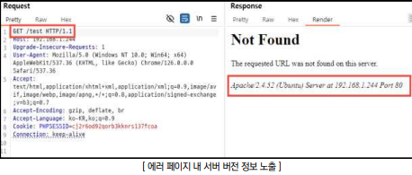
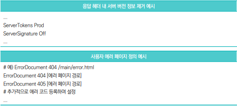
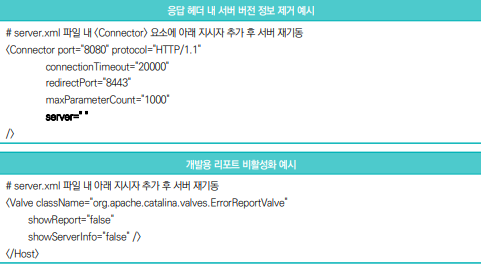
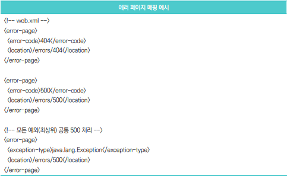
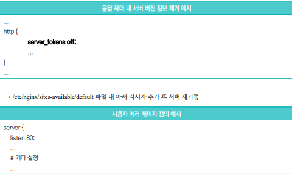
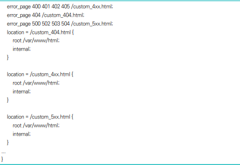
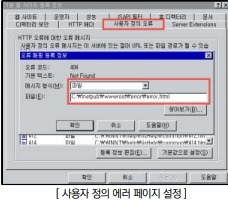
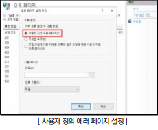

점검 목적
- 사용자 정의 에러 페이지를 설정하여 기본 서버 에러 페이지 내 불필요한 정보(서버 버전 정보, 시스템
절대 경로, 스택 트레이스 등)의 제공을 차단하기 위함
보안 위협
- 에러 페이지 내 서버 및 응용 시스템의 상세한 정보를 포함한 경우, 시스템 구조와 스택 트레이스, 데이터베이스 쿼리 등 민감한 정보를 노출시켜 공격 벡터로 악용할 가능성 존재
판단 기준
- 양호 : 에러 발생 시 자체 정의 에러 페이지를 출력하여 과도한 정보가 노출되지 않는 경우
-취약 : 에러 발생 시 기본 에러 페이지가 출력되며, 해당 페이지에 불필요한 정보(서버 버전 정보, 시스템
경로, 스택 트레이스 등)가 노출되는 경우
조치 방법
- 웹 애플리케이션 서버 내 사용자 정의 에러 페이지를 적용함으로써 불필요한 정보 노출을 방지
점검 방법
- Step 1) 에러 유도 시 에러 페이지 내 불필요한 정보(서버 버전 정보, 시스템 절대 경로, 스택 트레이스 등)가 노
출되는지 확인

조치 방법 (서버별)
Apache
- apache2.conf 또는 httpd.conf 파일 내 아래 지시자 추가 후 서버 재기동

Tomcat
- server.xml 파일 내 아래 지시자 추가 후 서버 재기동
 
Nginx
- nginx.conf 파일 내 아래 지시자 추가 후 서버 재기동
 
IIS (6.0 이하)
- Microsoft사의 URLScan 3.1 도구 지원 종료로 인한 서버 버전 제거 제한
에러 페이지
- 인터넷 정보 서비스 → 등록 정보 → 사용자 정의 오류 → 등록 정보 편집 → 별도 에러 페이지 지정

IIS (7.0 이상)
- IIS 관리자 → 오류 페이지 → 기능 설정 편집 → 사용자 지정 오류 페이지
